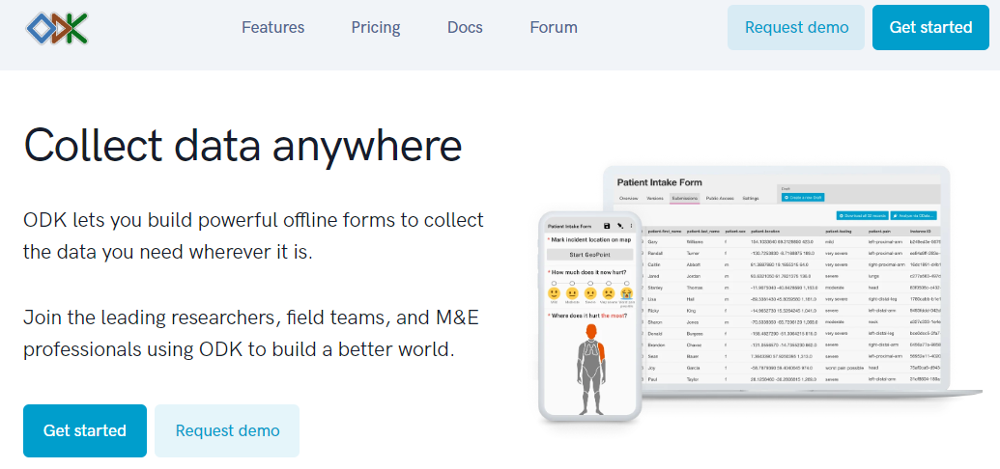
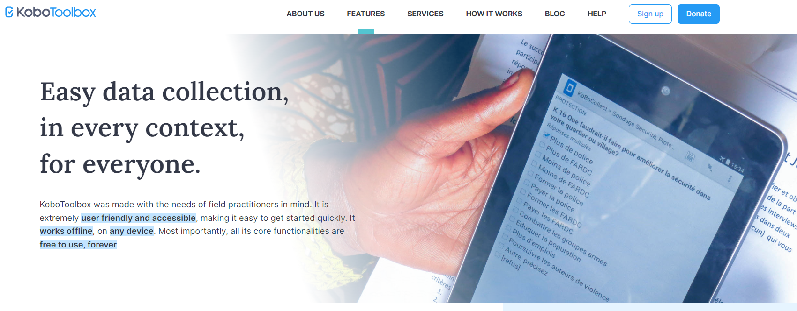
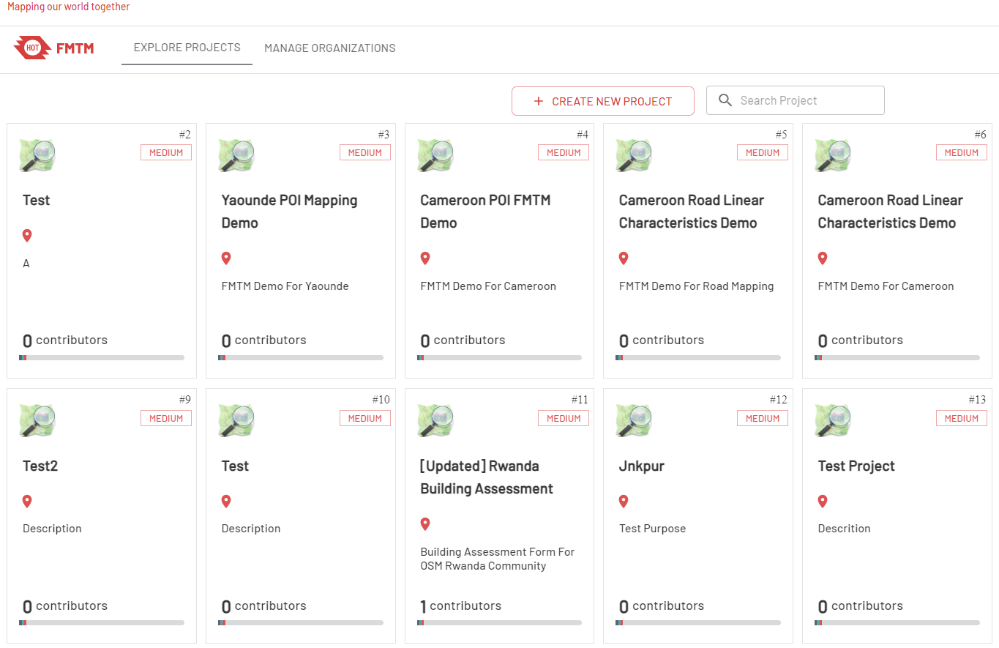

2.3 Data Collection Servers
Course Objectives
This section will explain on overview of server for field data collection. You will find several options to choose from. By the end of this, you should be able to learn:
- Understand server storage options to store field data
- Guidance on selecting a server for your project needs
- Brief overview of server options
Learning Activities
When beginning a mapping project, many organizations ask if they need to have a server. After collecting data, you’ll need to get the data from the devices. Sometimes, it works to simply collect and process data directly from the data collection devices. However, this does not scale well when you get more people collecting data, and also means your data is not backed up - if you lose the device, you can lose the data. Prior to data collection, it is important to have a data management strategy that is suited for your operations.
Choosing Storage Option
Cloud Server vs. Physical storage - Using a data collection server allows for much better management of forms and deployments, collection and aggregation of responses, and can offer additional features for viewing, analysing and exporting data. Use of a server may be restricted by available resources (cost of a server) and/or internet connection (access to cloud server). Servers used in HOT workflows include:
- Kobo Toolbox
- Field Mapping Tasking Manager
- Ona.io
If the use of a server is not available to you, it is still possible and crucial to store backups of data. In this case, data will need to be downloaded or otherwise shared with a central location, such as a laptop computer, and cloned to a secondary location such as a hard-drive or second computer.
Which server should i use?
If you do decide to use a server, use the following table to decide which table is best for your project and resource restrictions. These are not the only options available, but instead, servers that HOT has used and tested in the field for mapping projects.
| I want to use a server that… | Kobo Toolbox | FMTM | ODK Central |
|---|---|---|---|
| Is physical or does not require internet connection to upload | 🟡(require technical team to setup the server) | 🟡(require technical team to setup the server) | 🟡(require technical team to setup the server) |
| Is cloud-based (data upload via internet) | 🟢 | 🟢 | 🟢 |
| Accepts ODK or Kobo Collect Data | 🟢 | 🟢 | 🟢 |
| Export as OSM xml or GeoJSON | 🛑 | 🟢 | 🛑 |
| Split area into smaller tasks | 🛑 | 🟢 | 🛑 |
| Can provide data visualization | 🟢 | 🟡(limited capability) | 🟢 |
| Free to use | 🟢(using Kobo for humanitarian) | 🟢 | 🟡(require technical team to setup the server) |
ODK Central
ODK is an integrated data collection tools, that covers all aspects of data collection activities, from building data collection instruments, to the collection of the data. ODK Central will lets you to build powerful offline forms.

Skill level to implement and manage
Beginner
Use ODK Central Server if:
- You have technical knowledge/technical person that can setup ODK Central in your own server
- General data collection.
- Data is collected in .xml format, such as with ODK or Kobo Collect
- Geospatial data collection does not include polygons - GPS points are accepted
Set-up and Data Management Visit https://docs.getodk.org/central-install/.
Kobo Toolbox
Kobo Toolbox is an online platform that allows users to build Kobo/ODK surveys as well as store, aggregate, and perform analysis of Kobo/ODK data

Skill level to implement and manage
Beginner
Use Kobo Toolbox Server if:
- You want to conduct data collection related to humanitarian response
- General data collection.
- Data is collected in .xml format, such as with ODK or Kobo Collect
- Geospatial data collection does not include polygons - GPS points are accepted
Set-up and Data Management Visit kobo.humanitarianresponse.info
Field Mapping Tasking Manager (FMTM)
Field Mapping Tasking Manager (FMTM) is a tools that helps project managers to organize and manage mapping tasks. It assigns those tasks to volunteers and tracks their progress. The FMTM facilitates collaborative mapping by supporting and extending existing mature tools - Open Data Kit (ODK). FMTM recently developed by HOT in 2022 and had two pilot projects to test the platform. FMTM supports data export as OSM XML file which will helps you download field survey data and open directly in JOSM.

Skill level to implement and manage
Beginner
Use Kobo Toolbox Server if:
- You want to conduct data collection related to OSM
- You want to split your project area into smaller grid to assign to your surveyor/volunteers
- Data is collected in .xml format, such as with ODK
- Geospatial data collection that will read OSM data extract as geojson (polygon, centroid, or line)
Set-up and Data Management Visit https://fmtm.hotosm.org/
[Quiz] Check Your Knowledge
-
ODK Central is designed to manage data collection project into smaller task/grid
a. True
b. False
-
Field Mapping Tasking Manager allows you to download field data as OSM XML format
a. True
b. False
Answer: 1.B | 2.A
Activity Checklist
Now you already understand three different types of data collection servers that HOT uses. By the end of this section you will able to:
- Differentiate between each data collection server providers
- Choosing the right data collection server according to the project goals